Галерия от Проекти
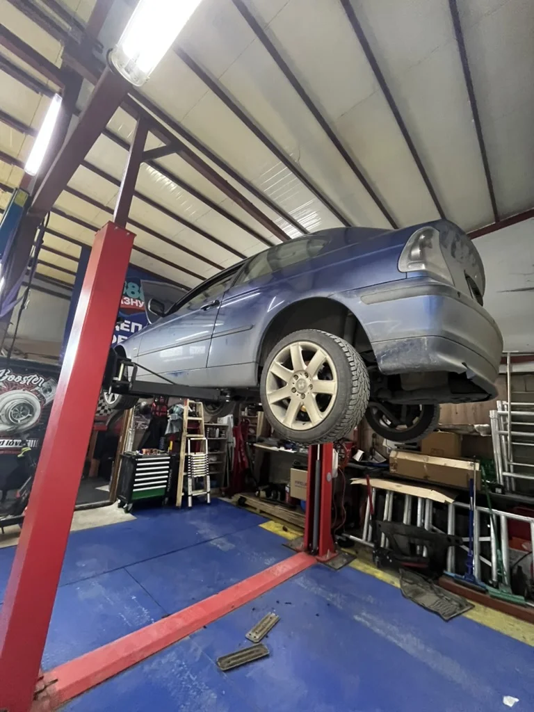
🚗 BMW E46 320d compact (150hp)
✅ Remap Stage 1
✅ EGR OFF
🍿 Прекъсвач
💻 EDC16C31
📍 Локация: Бургас / Карнобат
Прочети всичко...
Това BMW E46 Compact пристигна за цялостна софтуерна оптимизация, двигателят M47 с Bosch EDC16C31 предлага страхотен потенциал за сигурен тунинг.
🛠 Извършени услуги:
- 🚀 Stage 1 Remap: Оптимизация на картите за гориво и налягане на турбото.
- ✅ EGR OFF: Софтуерно изключване за по-дълъг живот на мотора.
- 🍿 Popcorn Limiter: Твърд прекъсвач на 4500 оборота.
🚀 Резултатът:
Колата вече е с коренно различна динамика, без никакъв дим и с осезаемо по-директен педал на газта.
💻 ECU: Bosch EDC16C31
📍 Локация: Бургас / Карнобат

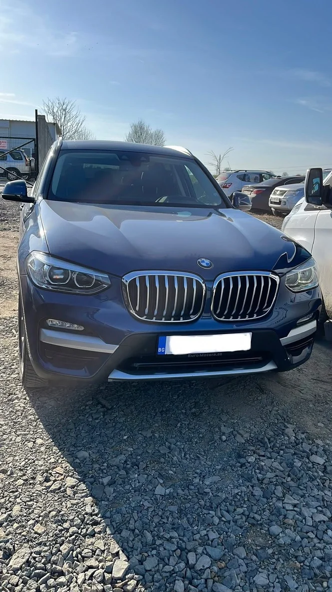
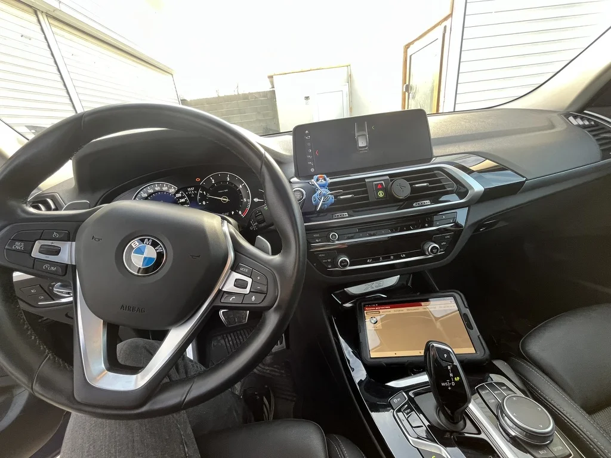

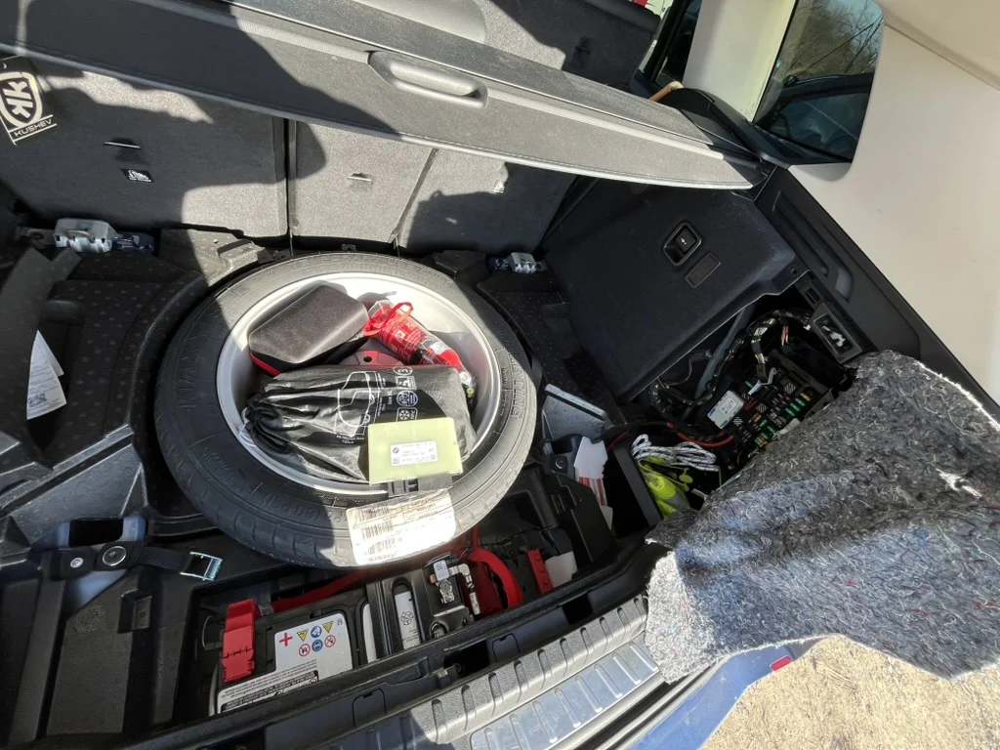
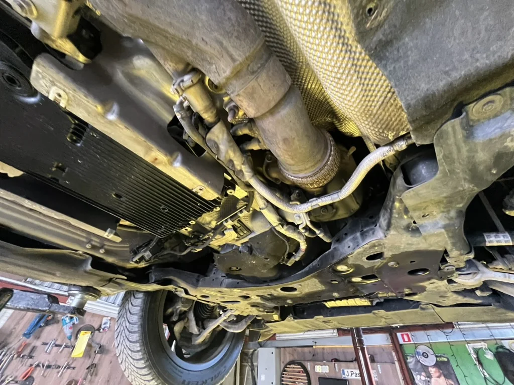
🚗 BMW X3 (G01) 2.0d 2018г.
✅ Remap Stage 1
✅ AdBlue (SCR) / DPF / EGR OFF
Прочети всичко...
Това модерно BMW X3 (G01) 2.0d от 2018 година пристигна в Apostolov Tuning със светеща индикация 'Check Engine' и критичен проблем в AdBlue (SCR) системата. Тези автомобили са оборудвани с най-новото поколение контролери Bosch MD1CS001, които изискват изключителна прецизност и специализирана техника за работа.
Нашият екип извърши цялостна софтуерна оптимизация, като към автомобила бе подходено с внимание към всеки детайл. В сътрудничество с наш партньорски сервиз, беше извършено и механичното премахване на DPF филтъра, за да гарантираме пълната надеждност на двигателя.
🛠 Извършени услуги:
- 🚀 Ремап Stage 1: Значително повишаване на мощността.
- ✅ AdBlue (SCR) OFF: Край на аварийните режими.
- ✅ DPF OFF: Коректна работа без регенерации.
- ✅ EGR OFF: По-чиста работа на мотора.
- ✅ Swirl Flaps OFF: Премахване на вихрови клапи.
🚀 Резултатът:
„Автомобилът е в перфектно техническо състояние, без никакви грешки на таблото и с осезаемо по-добра динамика и еластичност. Собственикът вече се радва на коренно различно поведение и спокойствие.“
💻 ECU: Bosch MD1CS001 (Bench Mode)
📍 Локация: Карнобат / Бургас


🚗 VW Touareg 3.0 TDI 2013г.
✅ Remap Stage 1
✅ DPF / EGR OFF
Прочети всичко...
✅ Механично премахване на ДПФ
🚀 Резултат:
Значително повишена мощност и въртящ момент, подобрена динамика и премахнати екологични ограничения.
💻 ECU: EDC17CP44

🚗 Mercedes-Benz C320 CDI (224hp)
✅ Софтуерно изолиране на DPF/EGR
Прочети всичко...
🔍 Диагностика: Пълна проверка със Star Diagnosis (Xentry) преди и след намесата.
🚀 Резултат:
Трайно решение на проблемите с екологичните системи, премахване на аварийния режим и по-добра динамика на двигателя OM642.
💻 ECU: Bosch EDC17CP01
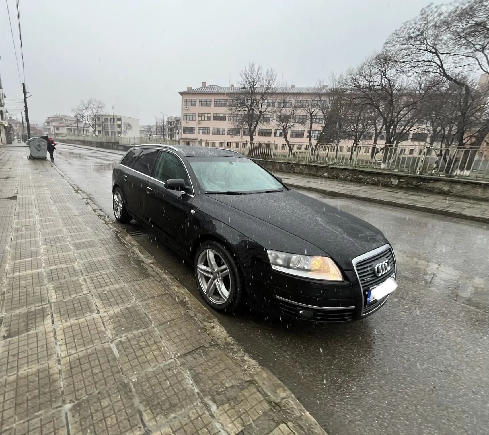
🚗 Audi A6 3.0 TDI (224hp)
🛠 Stage 1 + P0234 Fix
Прочети всичко...
🔍 Диагностика: Колата пристигна в авариен режим поради некачествен софтуер.
✅ Услуга: Пълна ревизия на софтуера + Stage 1 Remap.
🛠 Екстри: EGR Off, Swirl Flaps Off, Popcorn Limiter.
🚀 Резултат:
Коригирано пренадуване на турбината и агресивна динамика.
💻 ECU: Bosch EDC16CP34
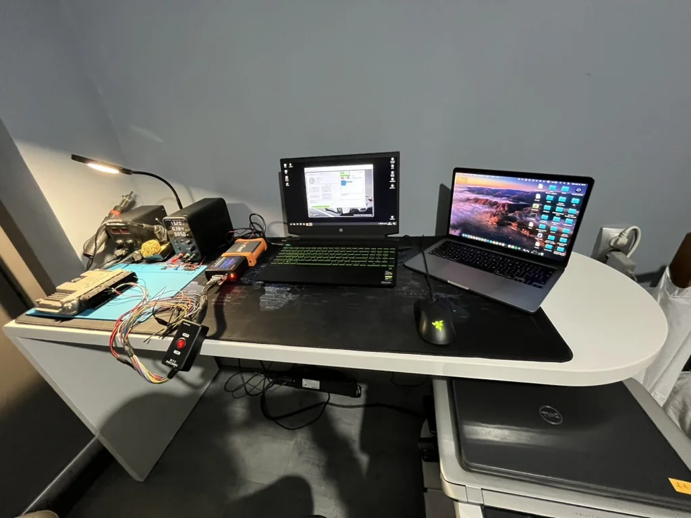
🚗 Skoda Octavia 2 1.9 TDI
🔑 Immo Off
Прочети всичко...
💻 Метод: Работа в Bench Mode (ECU EDC16U34).
🛠 Проблем & Решение:
Автомобилът не разпознаваше оригиналния ключ. Вместо скъп ремонт на таблото, приложихме софтуерен подход за трайно решение.

💻 Лаборатория & Електроника
✅ Bench Mode Specialists
Прочети всичко...
✅ Bench Mode: Директна връзка с компютъра за 100% сигурност.
✅ Нови автомобили: Поддръжка на защитени компютри (EDC17, MED17, MD1).
🚀 Специализирани услуги:
⚙️ Ремап на TCU (DSG, DQ250...)
💾 Клониране на ECU при повреда
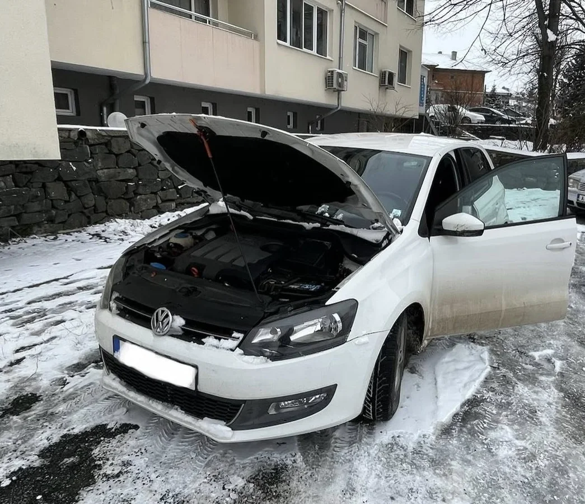
🚗 VW Polo 1.6TDI 2010г.
🚀 Stage 1 Remap
Прочети всичко...
✅ Софтуерно изолиране на EGR и DPF.
❌ История:
След дълъг престой в бокса, проблемите бяха отстранени и колата е в движение с подобрена динамика.
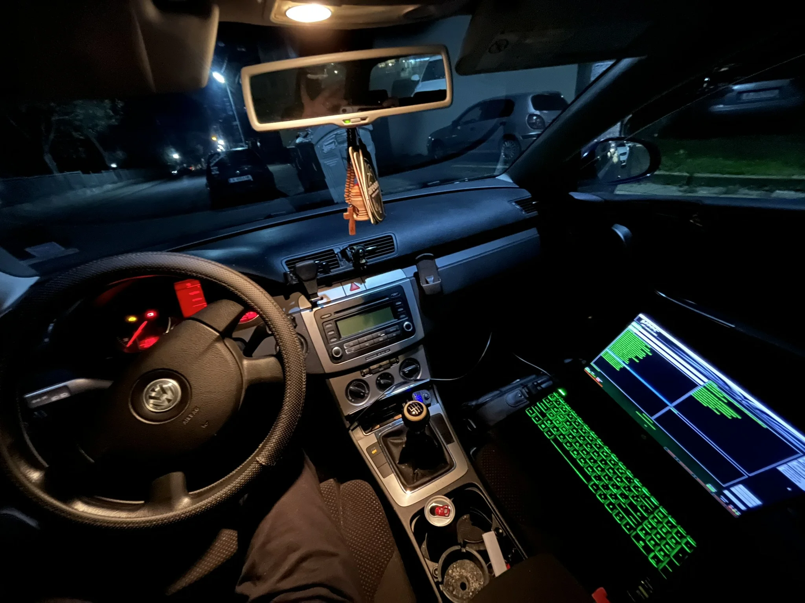
🚗 VW Passat B6 2.0TDI
🚀 Stage 1 Remap
Прочети всичко...
🐢 140кс ↗️ 175кс ✈️
🐢 320нм ↗️ 390нм ✈️
⛽️ По-нисък разход на гориво
♻️ Без дим и компромиси с надеждността
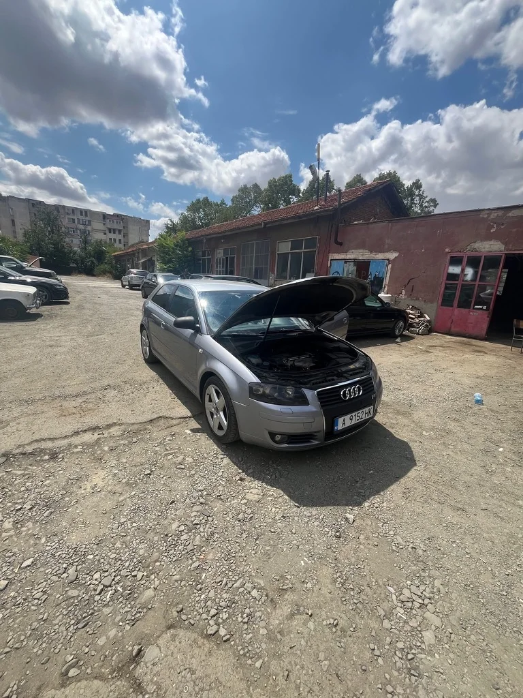
🚗 Audi A3 8P 2.0 TDI (BKD)
🚀 Stage 1 Remap
Прочети всичко...
🐢 140кс ↗️ 175кс ✈️
🐢 320нм ↗️ 395нм ✈️
⚡️ По-директен педал на газта
📉 Оптимизиран разход
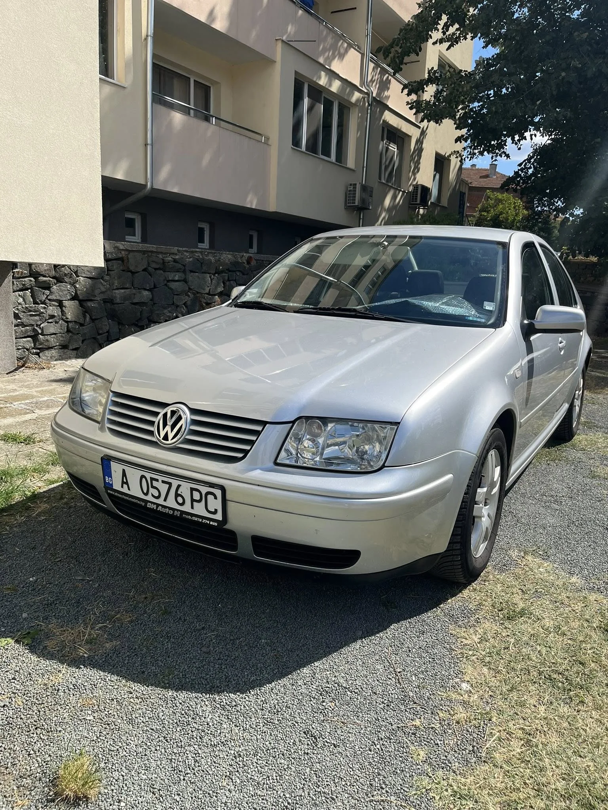
🚗 VW Bora 1.9 TDI (AJM)
🍿 Stage 1 Popcorn
Прочети всичко...
🐢 116кс ↗️ 145кс ✈️
🐢 285нм ↗️ 360нм ✈️
🚀 Launch Control & Popcorn
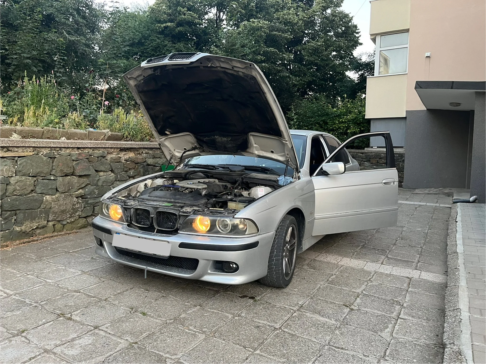
🚗 BMW 525d E39 (M57)
🚀 Stage 1 Remap
Прочети всичко...
🐢 163кс ↗️ 195кс ✈️
🐢 350нм ↗️ 430нм ✈️
🍿 Hard Cut прекъсвач
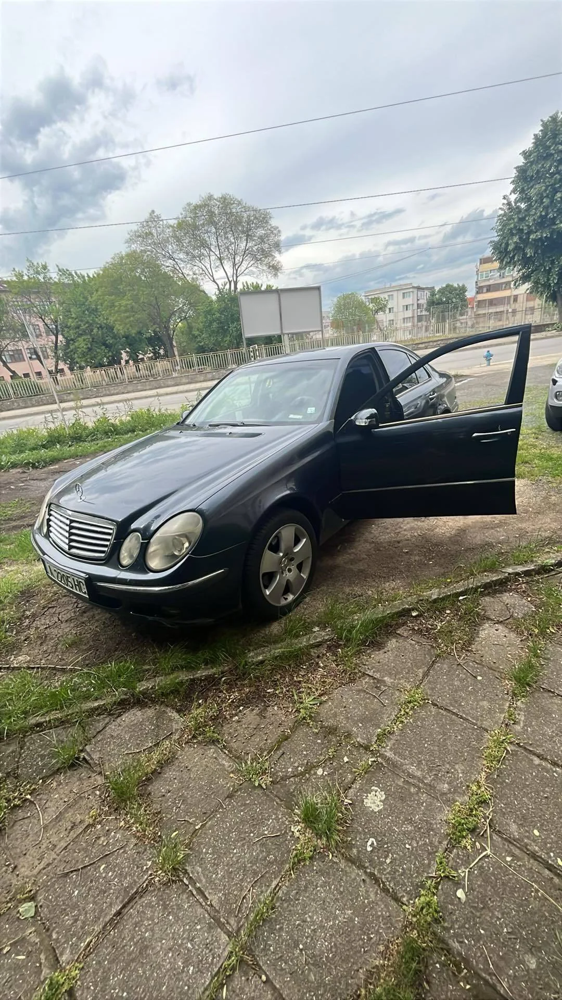
🚗 Mercedes W211 E200 CDI
💨 Swirl Flaps Off
Прочети всичко...
🐢 122кс ↗️ 175кс ✈️
🐢 270нм ↗️ 380нм ✈️
🔥 Отключен фабричен потенциал

🚗 Honda CR-V 2.2 i-CTDI
🚀 Stage 1 Upgrade
Прочети всичко...
🐢 140кс ↗️ 185кс ✈️
🐢 340нм ↗️ 400нм ✈️
✅ Софтуерно премахване на EGR
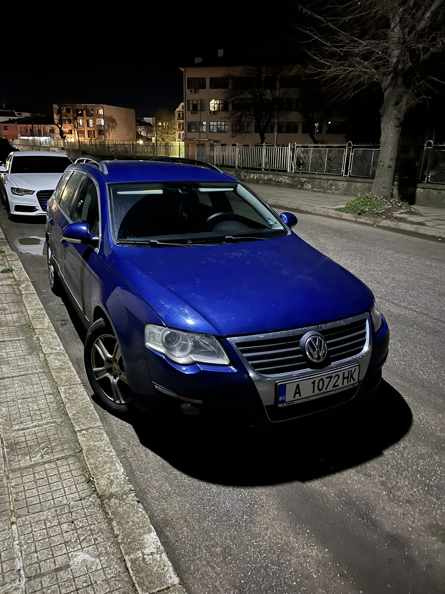
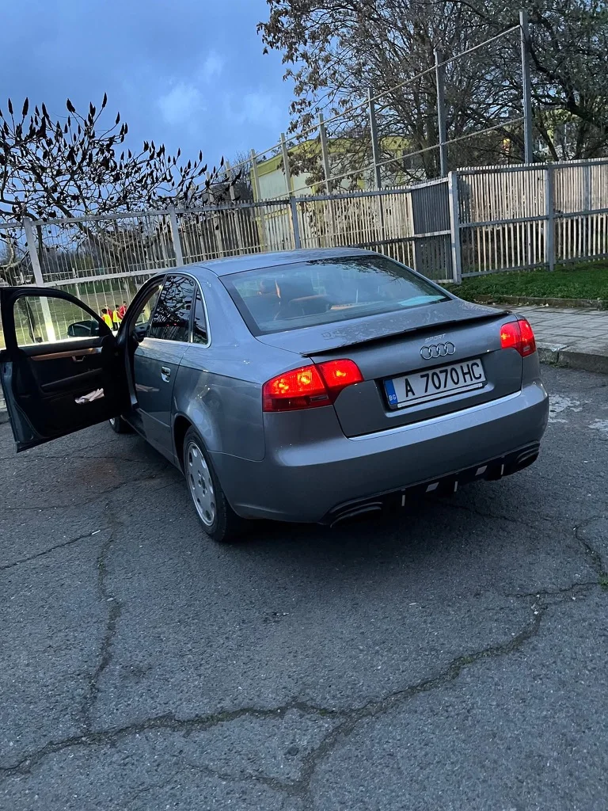
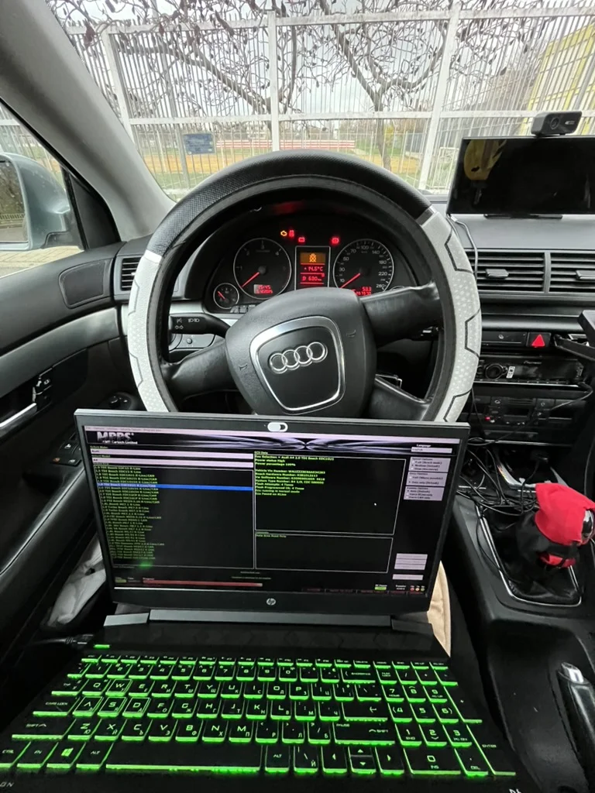
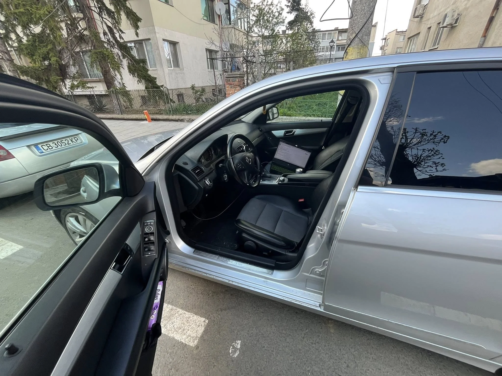
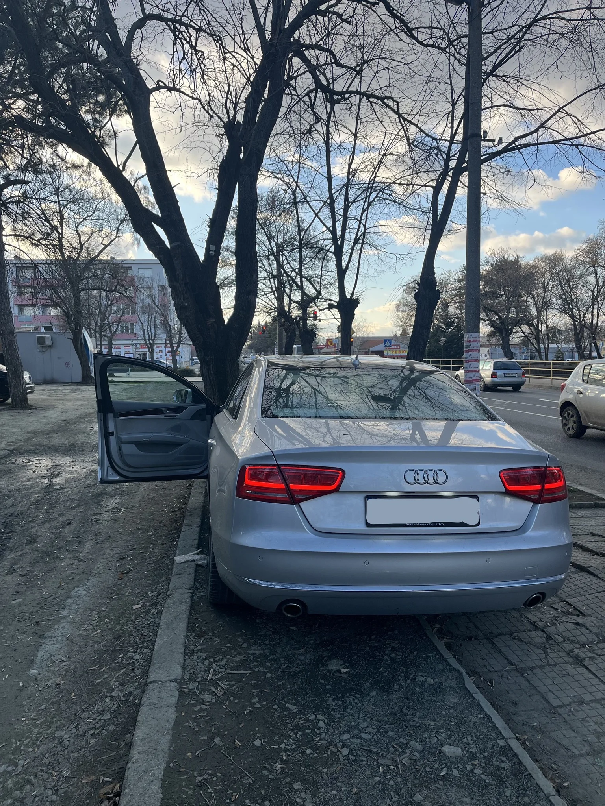
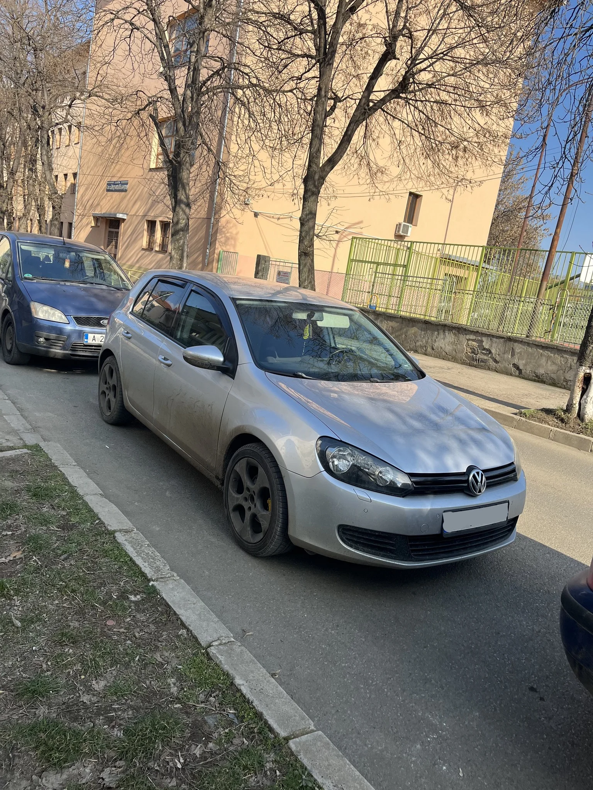
За Apostolov Tuning
Ние сме специализирани в индивидуалната софтуерна оптимизация на автомобилни двигатели. Твърдо вярваме, че всяка кола изисква уникален подход, затова не използваме универсални или готови софтуерни решения.
Нашият приоритет е качеството и сигурността. След нашата намеса автомобилите не създават проблеми, нямат записани грешки и работят без черен дим или излишен пушек. Търсим оптималния баланс, който отключва потенциала на колата, без да води до излишно износване на частите.
Нашите Услуги
Performance Tuning
- ✅ Remap - Stage 1, Stage 2, Stage 3
- ✅ Remap на скоростна кутия
- ✅ Индивидуална настройка
- 🍿 Popcorn, Pops & Bangs
Софтуерни Решения
- 🚫 EGR (ЕГР), DPF, AdBlue OFF
- ⚙️ Вихрови клапи (Swirl Flaps)
- 🔌 Изолиране на дебитомер (MAF)
- 🔑 Имобилайзер (Immo OFF)
Диагностика и Екстри
- 🆕 Активиране на екстри (VAG, BMW)
- 💻 Професионална диагностика
- 🔧 Vmax (Limit OFF)
- ✅ Launch Control
Защо Apostolov Tuning?
Модерна Апаратура
✅ Използваме професионални инструменти за стабилна комуникация с ECU. Пълна поддръжка на съвременни двигатели (EDC17, MED17 и др.) и най-новите софтуерни протоколи.
100% Сигурност и Архив
✅ Винаги правим пълен архив (Full Backup) на оригиналния софтуер преди всяка промяна. Вашият автомобил е защитен и може да бъде върнат към заводски настройки.
Индивидуален Подход
✅ Всеки софтуер се обработва индивидуално спрямо състоянието на колата. Попитайте ни за пакетни услуги.
Често Задавани Въпроси
При професионално направен ремап (Stage 1), двигателят не се претоварва. Ние оптимизираме параметрите в рамките на безопасните лимити, заложени от производителя. Това не скъсява живота на мотора, а често дори подобрява работата му чрез по-добра оптимизация на горивните процеси.
При дизеловите двигатели разходът обикновено пада с 0.5 до 1.0 литър на 100 км при спокойно каране. Това се дължи на повишения въртящ момент, който позволява на автомобила да поддържа скорост на по-ниски обороти и по-висока предавка.
Категорично не. Нашите софтуерни решения са разработени така, че да запазят перфектната смес от гориво и въздух. Автомобилът ще работи чисто, без черен дим или излишни емисии, стига механичното му състояние да е изправно.
Стандартната процедура за Stage 1 тунинг или софтуерно изключване на системи (DPF/EGR) отнема между 1.5 и 3 часа. Това включва диагностика, четене на оригиналния софтуер, модификация и финални тестове.
Да. Винаги пазим архив на оригиналния софтуер на всеки автомобил, който сме обслужвали. Връщането към заводски настройки е напълно възможно и безопасно по всяко време.
Свържете се с нас
📞 Телефон: 089 608 4735
📍
Локация:
Карнобат
(Мобилна услуга за Бургас, Айтос, Ямбол, Сливен и Шумен)
⏰ Работно време: Всеки ден: 08:00 - 22:00